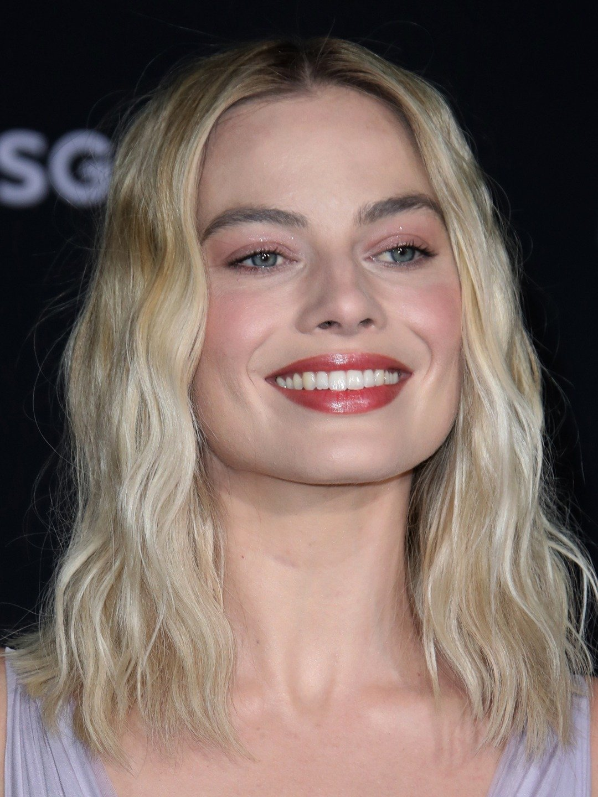
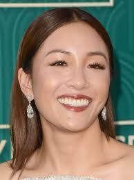

"People will say to me, 'You've played so many strong women' and I'll say, 'Have you ever said to a man, 'You've played so many strong me?'"
Meryl Streep is classified as one of the most iconic female actresses of her generation. She's earned this title through the strong female characters she's portrayed as well as her work away from the screen. Her other work includes
funding a lab for female screenwriters of the age of forty. Some of her most famous roles include her role as the titular character in Sophie's Choice (1982), Miranda Priestly in The Devil Wears Prada (2006),
Donna in Mamma Mia! (2008), and many more. She has holds the record of most nominated actor with twenty-one Academy Award nominations and has received three Oscars.
Viola Davis
Born: August 11 1965
"Do not live someone else's life and someone else's idea of what womanhood is. Womanhood is you. Womanhood is everything that's inside of you."
Viola Davis is at the forefront of the film industry today. She continues to wow audiences with her commanding presence delivering a profound impact to each film she stars in. Davis is widely recognized for her Oscar-winning performance as Rose in Fences, maid Aibileen Clark in The Help (2011), as well as in television show How to Get Away with Murder as leade role Annalise Keating.
Davis is the first Black woman to achieve the Triple Crown of Acting: winning an Oscar, Tony, and Emmy. Additionally, she is the first woman of color to win a Primetime Emmy Award for Outstanding Lead Actress in a Drama Series. Along with her close friend, Octavia Spencer, she is also one of two Black women to have received three Academy Award nominations. Outside of acting, Davis works with the Hunger Is campaign to eradicate youth hunger across the nation. She also has spoken out concerning a variety of issues including, racism, inequality, equal pay, and the diversification of the film industry.
Maggie Smith
Born: December 28, 1934
"Speak your mind even if your voice shakes"
Over the last half a century, Dame Maggie Smith has graced audience's screens and found a place in their hearts. The poise and complexity Smith brings to her characters setting her apart as one of Britain's most recognizable actresses. Although she has starred in over sixty films and over seventy plays, he is beloved for her role as Lady Violet Crawley, Dowager Duchess of Grantham in Downton Abbey and as Professor Minerva McGonagall in the Harry Potter series.
Like Viola Davis, Smith has also achieved the Triple Crown of Acting, and is one of only fourteen to claim the accomplishment. Among her plethora of awards are two Oscars and four Emmys. Queen Elizabeth II appointed her a Dame in 1990 for her significant contributions to the performing arts. In 2014, the Queen also granted her the distinction of Companion of Honor for her services to drama.
Lupita Nyong'o
Born: March 1, 1983
"No matter where you are from your dreams are valid."
Since her rise to stardom, only nine years ago, Lupita Nyong'o has captured the attention of audiences everywhere. For her breakthrough role as Patsey in historical drama, 12 Years a Slave (2013),
Nyong'o was awarded the Academy Award for Best Supporting Actress. Since then, she has continued to star in large blockbusters including Us (2019), Black Panther (2018), The Jungle Book (2016), and in multiple episodes of the latest Star Wars trilogy.
Nyong'o has made large strides in her many efforts off-screen including an anti-poaching campaign, a role as WildAid's Global Elephant Ambassador, ending worldwide hunger, and speaking out about Black beauty and her own insecurities she faced growing up.
Reese Witherspoon
Born: March 22, 1976
"I encourage women to step up. Don't wait for somebody to ask you."
Of all modern-day actresses, Reese Witherspoon may be one of the most iconic. After her debut in 1991's Man in the Moon, Witherspoon's career only catapulted. She broke through with her supporting role in 1999's Cruel Intentions, before gaining wide recognition as Elle Woods, a blonde Harvard law student, in Legally Blonde (2001). She also garnered much critical acclaim for her role as June Carter Cash in Walk the Line (2005). She is now one of the highest paid actresses and has been named as one top 100 most power women.
She has since begun work as a producer, producing and starring in Wild (2014). She also has produced and starred in multiple television series including Little Fires Everywhere, Big Little Lies, and The Morning Show. Outside of acting, Witherspoon has a clothing line, Draper James, a production company that focuses on female-led stories, and started a book club to center female characters and voices. She also has become involved in children and women's advocacy organizations.
Gal Gadot
April 30, 1985
"I wanted to show that women are empowered and strong, and don't have to be saved by some male hero, but they can take care of themselves using their intelligence and their power."
Although Gal Gadot is a relative newcomer to the silver screen, she has already made a profound impact. After being crowned Miss Israel in 2004, Gadot spent two years as a combat trainer in the Israel Defense Forces. Although her first international role was in Fast & Furious (2009), she really broke through as Diana Prince in 2017's Wonder Woman
She also has been listed as one of the top 100 influential people in the world and is was one of the highest paid actresses in 2020. She has also done much philanthropy work around her character as Wonder Woman.
Margot Robbie

Born: July 2, 1990
"Playing the bad guy is always more fun than playing the good guy."
Although Margot Robbie already has many credits under her belt, it is clear that this is only beginning of what is looking to be a long and accomplished film career. Since her breakthrough role in Martin Scorsese's The Wolf of Wall Street (2013), Robbie has continued to stun in her Oscar-nominated roles in I, Tonya (2017) and Bombshell (2019), as well as her portrayal of Sharon Tate in Once Upon a Time in Hollywood (2019) alongside Brad Pitt and Leonardo DiCaprio.
In addition to her Academy Award nominations, Robbie has been ranked amongst the world's highest paid actresses and has been named one of the top 100 most influential people in the world.
Octavia Spencer
Born: May 25, 1970
"To be silent is to be passive."
Octavia Spencer is truly an iconic woman in the film industry and beyond. Known for her supporting roles where she plays women of integrity and wit, Spencer dazzles audiences in all of her roles. Her portrayal of Minny Jackson in 2011's The Help garnered her an Oscar win, while her roles as Dorothy Vaughan and Zelda Fuller in Hidden Figures (2016) and The Shape of Water (2017) earned her Oscar nominations.
Spencer is the first Black actress to receive two consecutive Academy Awards nominations in back-to-back years and the first Black actress to receive two Academy Award nominations after a win. Spencer is tied with friend, Viola Davis, as the most nominated Black actress. She also participates in USA Networks Characters public service campaign, supports the Motion Picture and Television Fund, and works with The Alliance for Women in Media Foundation.
Constance Wu

Born: March 22, 1982
"I don't fear being outspoken. The only thing I fear is losing my sense of integrity or losing sight if the values on which I guide my life. So I don't think it's particularly brave or unusual for me to speak out."
Constance Wu is fairly new to the film industry, but is clearly just getting started. Her role in television comedy series, Fresh Off the Boat has gained her much recognition. Additionally she broke into film roles as the lead, Rachel Chu, in the highly successful 2018 movie Crazy Rich Asians. Although she has yet to be nominated for an Academy Award, she was the first Asian woman in forty years to be nominated for the Golden Globe Award for Best Actress in a Comedy or Musical.
Wu works as an activist regarding Asian representation in the US media and hopes to bring more diversity to the film industry. She has spoken out regarding her personal experiences of being denied roles due to her racial ethnicity and hopes to be a trailblazer for more diverse representation in film.